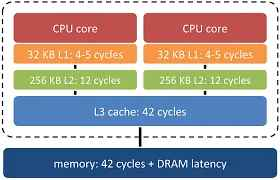

Sprint 1: El arte de elegir componentes
Durante las próximas dos semanas, nos convertiremos en consultores tecnológicos de primer nivel. Una de las responsabilidades más importantes de un agente digitalizador es saber escuchar, analizar y, sobre todo, asesorar eficazmente a sus clientes. Cada cliente es un mundo, con sus propias características y necesidades específicas a cubrir.
¿Creéis que un diseñador gráfico que trabaja con vídeo en 4K y modelado 3D necesita el mismo ordenador que una peluquería que solo quiere gestionar sus citas, llevar la contabilidad y manejar sus redes sociales? La respuesta es un rotundo no. Y ahí es donde entráis vosotros.
Elegir los componentes de un sistema informático no es solo una tarea técnica; es un arte. Es el arte de equilibrar rendimiento, presupuesto y sostenibilidad para ofrecer la solución perfecta a cada problema.
Sesión 1: "El Cuerpo y el Alma" (HW y SW)
Hoy empezamos nuestro viaje para convertirnos en Agentes Digitalizadores. Y la primera pregunta es: ¿qué tienen en común un robot, un móvil y una persona?
Todos tienen un cuerpo y una 'mente' que le dice a ese cuerpo qué hacer. En informática, a eso lo llamamos Sistema Informático.
HARDWARE (El Cuerpo 🦾) - El hardware son todas las partes físicas que podemos tocar. En una persona, son los huesos, los músculos, el cerebro, el corazón... En un ordenador, es la pantalla, el teclado, el ratón y, lo más importante, todo lo que hay dentro de la caja.
- El hardware es fuerte, pero por sí solo es inútil. Un cuerpo sin vida no hace nada.
SOFTWARE (El Alma y los Pensamientos 🧠)
- El software en una persona son sus pensamientos, su personalidad, su lenguaje... En un ordenador, es el sistema operativo (como Windows o MacOS) y todos los programas que usáis (Word, Chrome, juegos...).
- El software da vida al hardware. Sin software, un ordenador es solo una caja de metal y plástico.
Al igual que vuestros pensamientos (sw) le dicen a vuestro cuerpo (hw) qué hacer, del mismo modo, Fortnite (Sw) le dice a la tarjeta gráfica (hw) que dibuje un personaje en la pantalla.
A103.1(CE1, CMCT2) Explorando el Hardware
Objetivo: Familiarizarse con los componentes HW. básicos de un sistema informático y su función.
Haciendo uso de los siguientes recursos, haz un esquema conceptual de los componentes principales de un ordenador junto con una breve descripción de la función de cada uno:
- Vídeo: TODOS los COPONENTES y partes del PC en 5 minutos
- Artículo: Guía con todos los componentes de un ordenador
Realiza la actividad de forma individual sobre un documento Microsoft Whiteboard de tu identidad digital, nombralo A103_1 seguido de tu nombre, por ejemplo, en mi caso sería "A103_1 Javier Perales"
Haciendo uso de "Exportar/Alta resolución", exporta el archivo en un documento png y sube la respuesta en la actividad correspondiente de la plataforma Aules.
Sesión 2: "El Cerebro de la Operación" (El Procesador o CPU)
Se podría decir que el procesador es el "cerebro" del ordenador 🧠. Es el encargado de ejecutar todas las instrucciones y cálculos necesarios para que el sistema funcione correctamente.
Imagina el ordenador como una gran fábrica. El procesador será el jefe de producción. Decide qué tareas se deben hacer, da órdenes a los trabajadores (la memoria, la tarjeta gráfica, los periféricos...) y supervisa que el trabaja se haga de manera eficiente y rápida.
Al analizar un procesador (CPU), hay varios factores clave que debes tener en cuenta para comprender su rendimiento y cómo se adapta a tus necesidades. Aquí te resumo los aspectos más importantes que debes saber:
2.1 Arquitectura del Procesador
Se refiere al diseño y estructura interna del procesador. Ojo, no hay que confundirlo con las marcas de los procesadores. Las arquitecturas más comunes son:
- x86 (Intel y AMD) y
- ARM (desde 2020, Apple ha empezado a utilizar sus propios procesadores basados en ARM, la serie M (M1, M2, ...) aunque tambien se utilizan en dispositivos móviles y servidores).
Arquitectura x86
- Diseño CISC (Complex Instruction Set Computing): Esta arquitectura se caracteriza por un conjunto de instrucciones complejo, lo que permite ejecutar operaciones multifacéticas en una sola instrucción.
- Fabricantes principales: Intel y AMD son los desarrolladores más destacados de procesadores x86.
- Dispositivos comunes: Predominantemente utilizada en ordenadores de escritorio, portátiles y servidores, donde el rendimiento y la compatibilidad son primordiales.
Arquitectura ARM:
- Diseño RISC (Reduced Instruction Set Computing): Se enfoca en un conjunto de instrucciones más simple y eficiente, optimizando el consumo energético y el rendimiento por vatio.
- Fabricantes principales: ARM Holdings licencia su arquitectura a diversos fabricantes, entre ellos Qualcomm, Apple, Samsung y NVIDIA.
- Dispositivos comunes: Ampliamente implementada en dispositivos móviles como smartphones y tabletas, así como en sistemas embebidos y, más recientemente, en algunos portátiles y servidores debido a su eficiencia energética.
Diferencias clave:
- Eficiencia energética: Los procesadores ARM suelen consumir menos energía, lo que los hace ideales para dispositivos móviles y aplicaciones donde la duración de la batería es crucial.-
- Rendimiento: Los procesadores x86 ofrecen un alto rendimiento y son compatibles con una amplia gama de aplicaciones de escritorio y servidor.-
- Compatibilidad de software: La arquitectura x86 tiene una larga trayectoria en el mercado de PC, lo que garantiza una amplia compatibilidad con software existente. ARM está ganando terreno, especialmente con sistemas operativos y aplicaciones diseñadas específicamente para su arquitectura.
2.2 Frecuencia de reloj (Clock Speed)
La frecuencia de los procesadores se mide en gigahercios (GHz), que representan miles de millones de ciclos por segundo. Un procesador de 3.5 GHz, por ejemplo, ejecuta 3,500 millones de ciclos cada segundo.
Cuanto mayor es la frecuencia en GHz, más rápido puede ejecutar operaciones, aunque esto no siempre implica mayor rendimiento general (depende de otros factores como la arquitectura del procesador y la eficiencia energética).
2.3 Número de núcleos (Cores)
Un núcleo es una unidad de procesamiento independiente dentro del procesador. Cuantos más núcleos tenga un procesador, más tareas puede manejar simultáneamente. Procesadores con múltiples núcleos (dual-core, quad-core, octa-core, etc.) son mejores para multitarea y aplicaciones que requieren procesamiento paralelo.
Importante
Con el lanzamiento de los procesadores Intel Core de 12ª Generación (Alder Lake), Intel dio un gran paso adelante en esta filosofía, presentando dos tipos diferentes de núcleos dentro de un mismo procesador.
- Los P-Cores se llaman así porque la P viene de Performance, rendimiento en inglés.
- Los E-Cores se llaman así porque la E viene de Efficiency, eficiencia en inglés.
- LP E-Core, que sería un núcleo de ultra-bajo consumo.
Actualmente, Intel está en la 14ª generación de procesadores, conocida como Raptor Lake Refresh, con hasta 24 nucleos (8 P-Cores + 16 E-Cores).
Intel también tiene otras líneas de procesadores, como los procesadores Intel Xeon para servidores y estaciones de trabajo. Sin embargo, la línea Intel Core es la más conocida y utilizada en ordenadores de sobremesa y portátiles.
2.4 Número de Hilos (Threads)
Los hilos son las unidades más pequeñas que gestionan las tareas dentro de un núcleo. Algunos procesadores tienen tecnología de multithreading (como Hyper-Threading de Intel) que permite a un núcleo manejar más de un hilo simultáneamente.
Más hilos permiten un mejor rendimiento en aplicaciones multitarea y tareas que se benefician del paralelismo, como edición de video o renderizado 3D.
Solo los P-core tienen hilos
2.5 Memoria Caché
La caché es una memoria muy rápida integrada en la CPU para almacenar datos e instrucciones de uso frecuente. Tipos: - L1: Pequeña y ultrarrápida, cercana a los núcleos. - L2: Un poco más grande y más lenta que L1. - L3: Compartida entre todos los núcleos, más lenta pero de mayor capacidad.
La caché ayuda a acelerar el acceso a datos y reduce la necesidad de ir a la RAM para obtener información, mejorando el rendimiento general.

2.6 Socket
El Socket o zócalo es la interfaz física que conecta el procesador a la placa base. Cada tipo de procesador requiere un socket específico, por lo que es crucial asegurarse de que el procesador y la placa base sean compatibles.
Recurso: Socket 2'40''- 5'
A103.2(CE1, CMCT2) Procesadores
Completa el diagrama conceptual de la actividad anterior con las características más relevantes que se han presentado durante esta sesión.
Exporta el diagrama en png, al igual que has hecho en la actividad anterior y adjunta el documento en la tarea de Aules. Recuerda nombrar el archivo como A103_2 seguido de tu nombre y apellido.
Sesión 3: "Procesadores - 2ª Parte"
A103.3(CE1, CMCT2) Características de procesadores
Completa la siguiente tabla comparando las características clave de los procesadores indicados. Investiga y rellena cada campo utilizando los recursos proporcionados. Presta especial atención a la frecuencia base y turbo, el número de núcleos e hilos, la memoria caché y el tipo de socket de cada modelo.
| Característica | AMD Ryzen 7 5800H | Intel Core i9-13980HX | AMD Ryzen 9 7945HX | Intel Core i9-13900K |
|---|---|---|---|---|
| Frecuencia reloj base | ||||
| Frecuencia turbo | ||||
| Número de núcleos | ||||
| Hilos | ||||
| Caché | ||||
| Socket |
Recursos de apoyo:
- Significado de los nombres de procesadores Intel y AMD (Prime Tech Support)
- Entendiendo los nombres de Intel
- Entendiendo los nombres de AMD
- Características de procesadores Intel
- Características de procesadores AMD
- Especificaciones de procesadores Intel y AMD (TechPowerUp)
Responde a la actividad en un documento Word, nómbralo como A103.3 seguido de tu nombre y apellido, y adjúntalo a la tarea correspondiente en Aules.